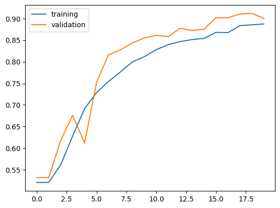
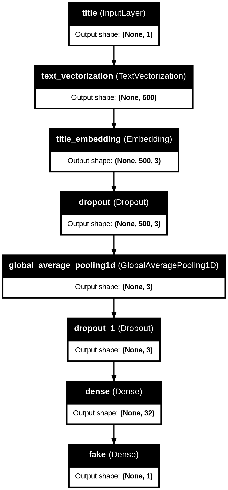
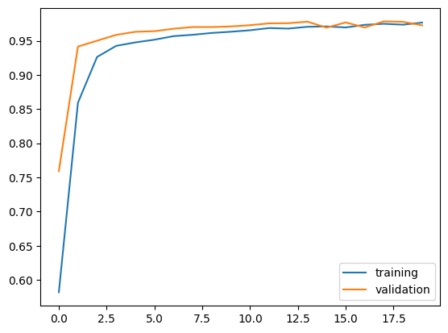
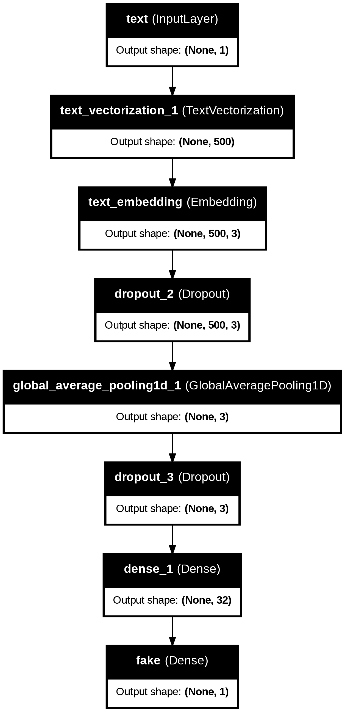
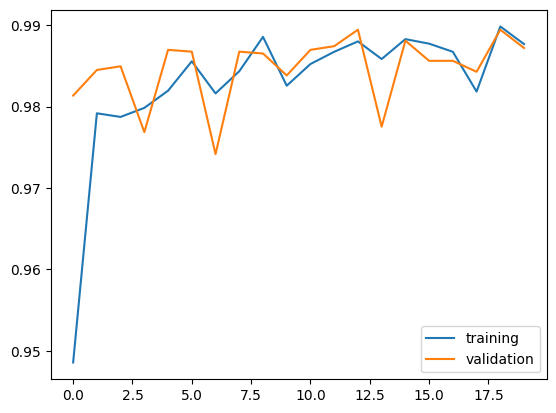
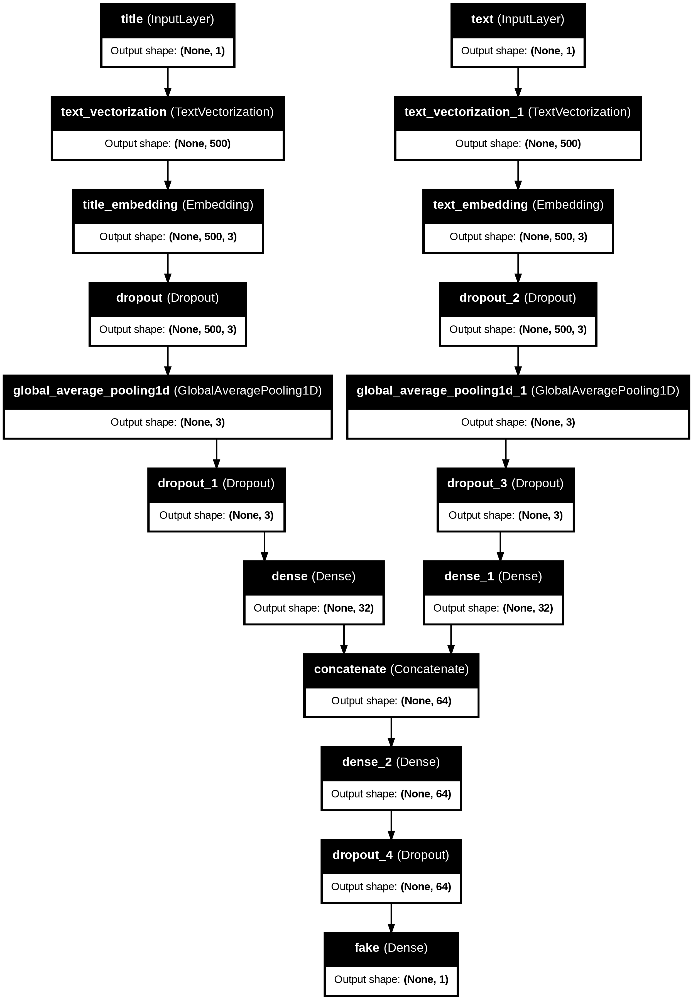
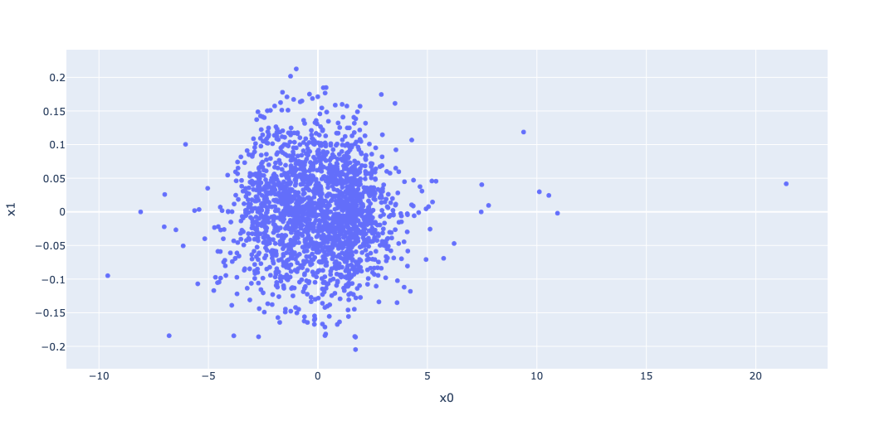

In this blog post, I will show you how to detect fake news using Keras text classification.
!pip install keras --upgrade
Requirement already satisfied: keras in /usr/local/lib/python3.10/dist-packages (2.15.0)
Collecting keras
Downloading keras-3.0.5-py3-none-any.whl (1.0 MB)
━━━━━━━━━━━━━━━━━━━━━━━━━━━━━━━━━━━━━━━━ 1.0/1.0 MB 3.6 MB/s eta 0:00:00
Requirement already satisfied: absl-py in /usr/local/lib/python3.10/dist-packages (from keras) (1.4.0)
Requirement already satisfied: numpy in /usr/local/lib/python3.10/dist-packages (from keras) (1.25.2)
Requirement already satisfied: rich in /usr/local/lib/python3.10/dist-packages (from keras) (13.7.1)
Collecting namex (from keras)
Downloading namex-0.0.7-py3-none-any.whl (5.8 kB)
Requirement already satisfied: h5py in /usr/local/lib/python3.10/dist-packages (from keras) (3.9.0)
Requirement already satisfied: dm-tree in /usr/local/lib/python3.10/dist-packages (from keras) (0.1.8)
Requirement already satisfied: ml-dtypes in /usr/local/lib/python3.10/dist-packages (from keras) (0.2.0)
Requirement already satisfied: markdown-it-py>=2.2.0 in /usr/local/lib/python3.10/dist-packages (from rich->keras) (3.0.0)
Requirement already satisfied: pygments<3.0.0,>=2.13.0 in /usr/local/lib/python3.10/dist-packages (from rich->keras) (2.16.1)
Requirement already satisfied: mdurl~=0.1 in /usr/local/lib/python3.10/dist-packages (from markdown-it-py>=2.2.0->rich->keras) (0.1.2)
Installing collected packages: namex, keras
Attempting uninstall: keras
Found existing installation: keras 2.15.0
Uninstalling keras-2.15.0:
Successfully uninstalled keras-2.15.0
ERROR: pip's dependency resolver does not currently take into account all the packages that are installed. This behaviour is the source of the following dependency conflicts.
tensorflow 2.15.0 requires keras<2.16,>=2.15.0, but you have keras 3.0.5 which is incompatible.
Successfully installed keras-3.0.5 namex-0.0.7
Now we are going to define the function called make_dataset. this function will return a dataset and clean the data; remove stopwords from the article text and title, using the nltk. We will change the text to lowercase and remove stopwords to ensure our models do not detect unnecessary words.
def make_dataset(df):# Change into lowercase df['title'] = df['title'].str.lower() df['text'] = df['text'].str.lower()# Import stopwords with nltk.import nltk nltk.download('stopwords')from nltk.corpus import stopwords stop = stopwords.words('english')# Exclude stopwords with Python's list comprehension and pandas.DataFrame.apply.# Simailr to what was on the StackOverFlow thread df['title'] = df['title'].apply(lambda x: ' '.join([word for word in x.split() if word notin (stop)])) df['text'] = df['text'].apply(lambda x: ' '.join([word for word in x.split() if word notin (stop)])) data = tf.data.Dataset.from_tensor_slices( ( {"title": df['title'],"text": df['text'] }, df['fake'].values ) )# Shuffle and batch the dataset data = data.shuffle(buffer_size=len(df), reshuffle_each_iteration=False) data = data.batch(100)return datadata = make_dataset(df)
[nltk_data] Downloading package stopwords to /root/nltk_data...
[nltk_data] Unzipping corpora/stopwords.zip.
Now that we’ve constructed our primary Dataset, we will split 80% for training and 20% for validation.
Base rate refers to the accuracy of a model that always makes the same guess. Now we will determine the base rate for this data set by examining the labels on the training set.
Before we build our model to detect fake news, we need to transform text data so that our machine learning models can understand and process, and this is called vectorization. We have to vectorize both text and the title. Vectorization will convert those text into numerical vectors.
# preparing a text vectorization layer for tf modelsize_vocabulary =2000# Define standardization functiondef standardization(input_data): lowercase = tf.strings.lower(input_data) no_punctuation = tf.strings.regex_replace(lowercase,'[%s]'% re.escape(string.punctuation), '')return no_punctuationtitle_vectorize_layer = TextVectorization( standardize=standardization, max_tokens=size_vocabulary, # only consider this many words output_mode='int', output_sequence_length=500)title_vectorize_layer.adapt(train_dataset.map(lambda x, y: x["title"]))
# Same for the 'text' columntext_vectorize_layer = TextVectorization( standardize=standardization, max_tokens=size_vocabulary, output_mode='int', output_sequence_length=500)text_vectorize_layer.adapt(train_dataset.map(lambda x, y: x["text"]))
Model 1: Title-Based Detection
The first model will only use the titles of articles to predict whether the news is fake or real.
# Inputtitle_input = keras.Input(shape=(1,), name='title', dtype='string')# layers for processing the titles, similar to 'lyrics_features' from the lecture notestitle_features = title_vectorize_layer(title_input)title_features = layers.Embedding(size_vocabulary, 3, name="title_embedding")(title_features)title_features = layers.Dropout(0.2)(title_features)title_features = layers.GlobalAveragePooling1D()(title_features)title_features = layers.Dropout(0.2)(title_features)title_features = layers.Dense(32, activation="relu")(title_features)# Output layer for binary classificationoutput = layers.Dense(1, activation="sigmoid", name="fake")(title_features)model1 = keras.Model(inputs=title_input, outputs=output)model1.compile(optimizer="adam", loss=losses.BinaryCrossentropy(from_logits=False), metrics=["accuracy"])model1.summary()# Train the modelhistory1 = model1.fit(train_dataset, validation_data=val_dataset, epochs=20)
from matplotlib import pyplot as pltplt.plot(history1.history["accuracy"],label='training')plt.plot(history1.history["val_accuracy"],label='validation')plt.legend()

The training results show the model’s success in distinguishing real and fake news reaching about 91% accuracy on unseen data.
from keras import utilsutils.plot_model(model1, "output_filename.png", show_shapes=True, show_layer_names=True)

Model 2 : Text-Based Detection
Our second model focus to the full text of the articles for the detection.
text_input = keras.Input(shape=(1,), name='text', dtype='string')# Similar with what we did for the title featurestext_features = text_vectorize_layer(text_input)text_features = layers.Embedding(size_vocabulary, 3, name="text_embedding")(text_features)text_features = layers.Dropout(0.2)(text_features)text_features = layers.GlobalAveragePooling1D()(text_features)text_features = layers.Dropout(0.2)(text_features)text_features = layers.Dense(32, activation="relu")(text_features)# Output layer for binary classificationoutput = layers.Dense(1, activation="sigmoid", name="fake")(text_features)model2 = keras.Model(inputs=text_input, outputs=output)model2.compile(optimizer="adam", loss=losses.BinaryCrossentropy(from_logits=False), metrics=["accuracy"])model2.summary()# Train the model with the full texthistory2 = model2.fit(train_dataset, validation_data=val_dataset, epochs=20)
from matplotlib import pyplot as pltplt.plot(history2.history["accuracy"],label='training')plt.plot(history2.history["val_accuracy"],label='validation')plt.legend()

The training results for model 2, focusing on article text, shows better performance with the accuracy of approximately 97%. This indicates that full text provides richer index for distinguishing authenticity than the title.
from keras import utilsutils.plot_model(model2, "output_filename.png", show_shapes=True, show_layer_names=True)

Model 3: Combination of Title and Text Detection
The third model is the combination of both titles and texts to make predictions. We could assume that the combination of title and article content provides the best indicator.
# Concatenate title and text featurescombined_features = layers.concatenate([title_features, text_features])# Dense layers for classificationcombined_features = layers.Dense(64, activation="relu")(combined_features)combined_features = layers.Dropout(0.5)(combined_features)output = layers.Dense(1, activation="sigmoid", name="fake")(combined_features)model3 = keras.Model(inputs=[title_input, text_input], outputs=output)model3.compile(optimizer="adam", loss=losses.BinaryCrossentropy(from_logits=False), metrics=["accuracy"])model3.summary()# Training the model with both title and texthistory3 = model3.fit(train_dataset, validation_data=val_dataset, epochs=20)
from matplotlib import pyplot as pltplt.plot(history3.history["accuracy"],label='training')plt.plot(history3.history["val_accuracy"],label='validation')plt.legend()

Model 3 shows very high validation accuracy, achieving over 98% accuracy on validation data. We can think that by considering both titles and article texts, we can detect almost every fake or real news with the model.
from keras import utilsutils.plot_model(model3, "output_filename.png", show_shapes=True, show_layer_names=True)

After comparing the performance of each model on validation data, using both the title and text of articles for fake news detection is most effective. Model 3 validation accuracy of 99% proves that combining these elements could achive more accurate assessment.
Final Model Evaluation
Now we’ll test the best model performance on unseen test data.
test_dataset = make_dataset(test_df)loss, accuracy = model3.evaluate(test_dataset)print(f"Loss for the test set: {loss}")print(f"Accuracy for the test set: {accuracy}")
[nltk_data] Downloading package stopwords to /root/nltk_data...
[nltk_data] Package stopwords is already up-to-date!
225/225 ━━━━━━━━━━━━━━━━━━━━ 2s 9ms/step - accuracy: 0.9869 - loss: 0.0460
Loss for the test set: 0.048416536301374435
Accuracy for the test set: 0.9862354397773743
The model performance on unseen test data is 98.6%.
Embedding Visualization
Now we are going to visualize and comment on the embedding of the model.
import plotly.express as pxfrom plotly.io import write_html# get the weights from the embedding layerweights = model3.get_layer('title_embedding').get_weights()[0]# Get the vocabulary from the text_vectorization layervocab = title_vectorize_layer.get_vocabulary()# Perform PCA on the embeddingsfrom sklearn.decomposition import PCApca = PCA(n_components=2)weights = pca.fit_transform(weights)# Create a DataFrame for the reduced embeddingsembedding_df = pd.DataFrame({'word': vocab,'x0': weights[:, 0],'x1': weights[:, 1]})# Create a scatter plotfig = px.scatter(embedding_df, x="x0", y="x1", size_max =5, hover_name="word")write_html(fig, "myplot.html")fig.show()

Embedding Visualization
Comments
The word “video” is located at the very right side of the x-axis, which could mean that it is a strong feature when determining fake news.
Similarly, the word “trump”, “obama”, and “hillary” are also located at the far end of the x-axis, implying that articles mentioning politician’s name could play a significant role in classifying the news.
“mass”, “several”, “send” are located right in the middle. These words implies that they have less discriminative power in distinguishing between real and fake news. These words are used relatively equally in both fake and real news.
“frances”, “zimbabwes”, and “myanmar” in the bottom left corner of the plot suggests they are outliers. They might appear only in specific types of articles, such as international or politic news.
“fbi”, “die”, and “federal” are clustered near the top center of the plot. This might suggest that they have some discriminative power, due to their association with more formal or serious news content.
Comments
The word “video” is located at the very right side of the x-axis, which could mean that it is a strong feature when determining fake news.
Similarly, the word “trump”, “obama”, and “hillary” are also located at the far end of the x-axis, implying that articles mentioning politician’s name could play a significant role in classifying the news.
“mass”, “several”, “send” are located right in the middle. These words implies that they have less discriminative power in distinguishing between real and fake news. These words are used relatively equally in both fake and real news.
“frances”, “zimbabwes”, and “myanmar” in the bottom left corner of the plot suggests they are outliers. They might appear only in specific types of articles, such as international or politic news.
“fbi”, “die”, and “federal” are clustered near the top center of the plot. This might suggest that they have some discriminative power, due to their association with more formal or serious news content.